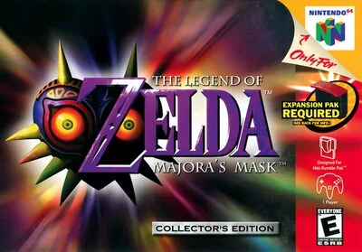

Nintendo 64
Legend of Zelda, The - Majora's Mask
Controles
¿Va fluido (imagen y sonido)? A acción · B espada · Z (flipper izq.) fijar objetivo · R escudo · C ← ↓ → usar objetos y máscaras · C ↑ (Escape) mirar · 1P menú.
Mando de N64 adaptado al panel. El joystick mueve la palanca analógica.
| Panel | Juego |
|---|---|
 | B · Atacar con la espada |
 | A · Acción (hablar, rodar, saltar) |
 | R · Cubrirse con el escudo |
 | C ← · Usar el objeto o la máscara asignada |
 | C ↓ · Usar el objeto o la máscara asignada |
 | C → · Usar el objeto o la máscara asignada |
 | C ↑ · Mirar en primera persona · hablar con Tatl |
 | Z · Fijar el objetivo · centrar la cámara |
 | Start |
 + + | Salir del juego |
El panel en Nintendo 64


Argumento
Recopilado de internet (2026-11-03). Lo marcado con ⚠️ no está probado en la bartop.
Link busca a su amiga Navi cuando un niño enmascarado, Skull Kid, le roba el caballo y la Ocarina del Tiempo y lo convierte en un Deku. Persiguiéndolo llega a Termina, un mundo paralelo.
Skull Kid lleva la máscara de Majora, que le da un poder terrible, y ha hecho que la Luna caiga sobre Ciudad Reloj en tres días. Link, con el hada Tatl, recupera la ocarina y usa la Canción del Tiempo para volver una y otra vez al primer día, mientras despierta a los cuatro gigantes que pueden detener la Luna.
Final: los gigantes detienen la Luna; la máscara abandona a Skull Kid y Link la vence dentro de la Luna. Termina se salva.
Fuentes
Jugabilidad
Recopilado de internet (2026-11-03). Lo marcado con ⚠️ no está probado en la bartop.
- Tipo de juego: aventura en 3D de Nintendo (2000), secuela de Ocarina of Time. Estructura en «Guía de niveles».
- Ciclo de tres días: el tiempo corre; al volver al primer día se conservan objetos y máscaras, pero no el dinero ni lo hecho en el mundo.
- Máscaras: hay 24; algunas transforman a Link en Deku, Goron o Zora, cada uno con sus habilidades.
- Fijar objetivo (Z): apunta al enemigo y permite moverse alrededor.
- Objetos en los C: se asignan a C ←, C ↓ y C → desde el menú.
- Necesita el Expansion Pak; el emulador ya lo incluye.
Fuentes
Guía de niveles
Recopilado de internet (2026-11-03). Lo marcado con ⚠️ no está probado en la bartop.
Son 4 regiones, cada una con su templo y su jefe, y la Luna:
| Región | Templo | Jefe |
|---|---|---|
| Pantano del Sur | Templo del Bosque Catarata (Woodfall) | Odolwa |
| Montaña | Templo del Pico Nevado (Snowhead) | Goht |
| Gran Bahía | Templo de la Gran Bahía | Gyorg |
| Ikana | Templo de la Torre de Piedra | Twinmold |
| La Luna | | Máscara de Majora |
Fuentes
Objetos
Recopilado de internet (2026-11-03). Lo marcado con ⚠️ no está probado en la bartop.
| Objeto | Qué hace |
|---|---|
| Ocarina del Tiempo | Toca canciones (la del Tiempo vuelve al primer día) |
| Máscaras | 24; las de Deku, Goron y Zora transforman a Link |
| Arco, bombas, gancho | Armas y objetos para avanzar |
| Fragmentos de corazón | Cuatro dan un corazón más |
Fuentes
Trucos y secretos
Recopilado de internet (2026-11-03). Lo marcado con ⚠️ no está probado en la bartop.
Secretos
- Máscara de la Fiera Deidad: con las 20 máscaras normales se consigue antes del jefe final.
- Diario de los Bombers: apunta las historias de los habitantes y sus horarios.
Fuentes
Longplay

Partida completa de la recreativa (651 min), de LongplayArchive: Longplay of The Legend of Zelda: Majora's Mask [HD].
Pulsa el minuto de un nivel para ver el vídeo desde ese punto.
Regiones
| Región | Momento |
|---|---|
| Ciudad Reloj | Llegada a la ciudad ▶ 9:47 |
| Pantano | |
| Montaña | |
| Gran Bahía | |
| Ikana | |
| La Luna | La Luna ▶ 10:22:57Máscara de Majora ▶ 10:36:15 |
| Final | Final y créditos ▶ 10:39:15 |